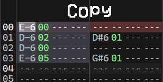
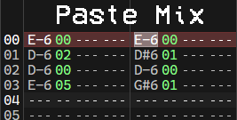
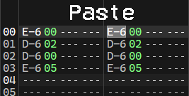
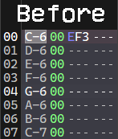
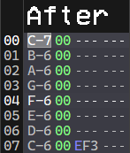

Edit
Undo
Undos the last change to the current song.
Redo
Redos the last undone change.
Cut
Copies the current selection to the clipboard and then erases it. If there is no selection, the cursor contents are used instead.
Copy
Copies the current selection or cursor to the clipboard.
Paste
Pastes the clipboard contents to the pattern at the cursor. This type of paste overwrites the contents at the cursor with clipboard data.
Paste Mix
Same as Paste, but mixes the clipboard data with the contents at the cursor. When mixing data, only empty columns get overwritten.
Example

 
Only rows 00 and 02 were copied since they were empty in the destination region.
Erase
Erases selection contents. If there is no selection, the cursor contents are erased.
Select All
Alternates between selecting the current track and the whole pattern.
Transpose
Transposes the selected notes or cursor by a certain amount.
Decrease note
Transposes the note down by 1 semitone.
Increase note
Transposes the note up by 1 semitone.
Decrease octave
Transposes the note down by 1 octave.
Increase octave
Transposes the note up by 1 octave.
Custom
Transposes the note by a specified number of semitones.
Reverse
Reverses by row the selected region. Does nothing if there is no selection.
 
Replace instrument
Replaces all selected instrument columns with the selected instrument. If no instrument is selected this action does nothing.
Key repetition
Toggles key repeat. When checked, holding down a key repeats it.